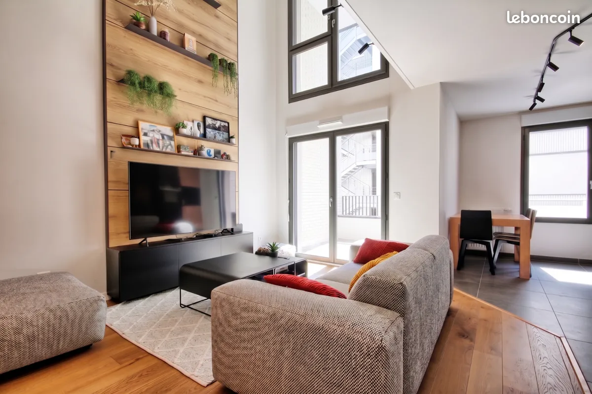

Duplex T4 avec balcon et 2 parkings - Bassins à Flot
28 cours Dupré Saint-Maur

Informations
- Statut
- En cours
- Adresse
- 28 cours Dupré Saint-Maur
- Bien
- Duplex T4 avec balcon et 2 parkings
- Année
- 2019
- Exposition
- Sud
- Taxe foncière
- 2 100 €
- Vendeur
- IBM, Immobilier Bordeaux Métropole
- Téléphone
- +33 5 81 84 28 99
- Date
- 2026-06-19
Description
Suivi
| Date | Historique |
|---|---|
| 2026/07/06 | Visite de prévue à cette date |
Duplex 4 pièces 100 m²
En exclusivité : Superbe Duplex T4 de 100.07 m2 'esprit loft' aux Bassins à Flot Situé au coeur du quartier dynamique et prisé des Bassins à Flot, à deux pas des Quais et du tramway B (station Achard), découvrez ce magnifique duplex clé en main', alliant volumes généreux et prestations de qualité. Ce bien rare se trouve au sein d'une résidence récente, sécurisée et parfaitement entretenue. Au RDC profitez d'une grande pièce de vie de 30 m2 baignée de lumière avec plafond cathédrale, une cuisine sur-mesure entièrement aménagée et équipée avec des matériaux de qualité et de nombreux rangements optimisés, et d'une chambre de 11 m2 avec salle d'eau privative et un WC indépendants.Un balcon accessible directement depuis le séjour complète ce plateau. À l'étage retrouvez un palier en mezzanine desservant deux grandes chambres (11 m2 et 15 m2), un dressing sur-mesure et une salle de bain
Le confort au quotidien : Stationnement : Rare sur le secteur, l'appartement est vendu avec deux places de parking couvertes en rez-de-chaussée. Commodités : Local à vélos sécurisé, ascenseur et chauffage collectif inclus dans les charges pour une gestion simplifiée. Quartier : Profitez d'une vie de quartier moderne avec ses commerces, ses écoles et ses lieux de vie culturels à proximité immédiate. Un bien idéal pour une famille ou des actifs en quête de confort et de modernité dans l'un des secteurs les plus en vue de Bordeaux. Honoraires d'agence compris dans le prix de vente affiché
Les informations sur les risques auxquels ce bien est exposé sont disponibles sur le site Géorisques : www.georisques.gouv.fr Les informations sur les risques auxquels ce bien est exposé sont disponibles sur le site Géorisques : www.georisques.gouv.fr
Surface : 100 m²
A propos de la copropriété :
Pas de procédure en cours
Nombre de lots : 205
Date de réalisation du diagnostic énergétique : 08/11/2025
Consommation énergie primaire : 60 kWh/m²/an
Consommation énergie finale : 50 kWh/m²/an
Montant estimé des dépenses annuelles d'énergie pour un usage standard : entre 480 € et 710 € sur les années 2021, 2022 et 2023 (abonnements compris).